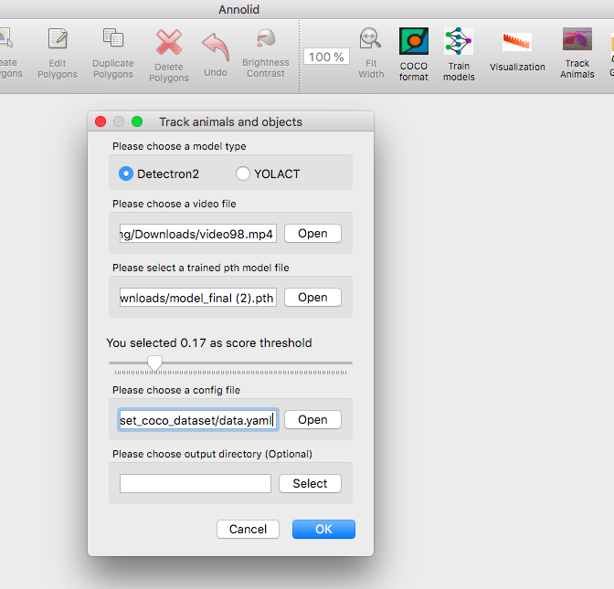
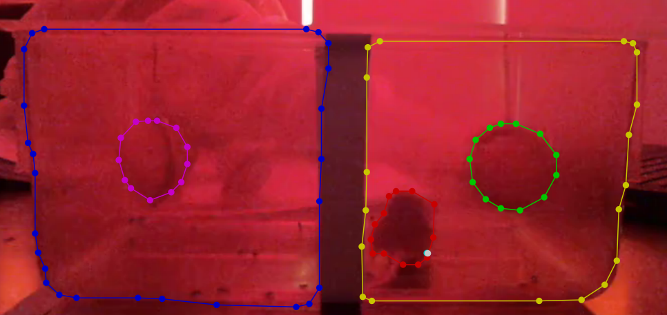

Track animals and Auto labeling
Click Track Animals button on the toolbar, fill the info in the opened dialog as follows.

Use Detectron2 as the default model type
Choose the video file path and provide the trained model file with .pth format
Select a class threshold between 0 and 1
Provide the data.yaml file path in the COCO dataset folder
The output result folder is optional.
Note. You need to install Detectron2 on your local device. If your workstation does not have a GPU card, it will only extract the key frames from the provided video and will save predicted results as json format in the same png image folder.
Here is an example of predicted polygon annotations.
 The GPU workstation will run inference for all the frames in the provided video and will save the predicted results into a CSV file.
Output CSV format
Here are the columns of the Annolid CSV output format:
frame_number: int, 0 based numbers for frames e.g. 10 the 11th frame
x1: float, the top left x value of the instance bounding box
y1: float, the top left y value of the instance bounding box
x2: float, the bottom right x value of the instance bounding box
y2: float, the bottom right y value of the instance bounding box
instance_name: string, the unique name of the instances or the class name
class_score: float, the confidence score between 0 to 1 for the class or instance name
segmentation: run length encoding of the instance binary mask
cx: float, optional, the center x value of the instance bounding box
cy: float, optional, the center y value of the instance bounding box
Cutie + DINO Body-Part Tracker
The Cutie + DINO tracker pairs Cutie’s video object segmentation with DINO patch descriptors to preserve keypoint identity across long and challenging clips. The runtime can be tweaked through CutieDinoTrackerConfig to prioritise appearance, structure, or symmetry cues depending on the animal and camera setup.
Key runtime parameters
appearance_bundle_radius/appearance_bundle_size/appearance_bundle_weightcontrol the per-keypoint appearance codebook. Increase the radius and size to gather more context in the first frame; raise the weight when fur patterns are distinctive and you want candidate patches that match the stored descriptors to win.baseline_similarity_weightpenalises candidates that deviate from the initial (first-frame) descriptor quality. Increase it to keep keypoints glued to their original look when lighting is stable; lower it when the appearance changes dramatically over time.structural_consistency_weightkeeps the inter-part distances close to the first frame. Boost it for rigid animals or cameras with minimal perspective distortion, and reduce it for highly articulated limbs.symmetry_pairs/symmetry_penaltydefine left/right identities that must not flip. List each(left_label, right_label)pair that should stay mirrored (labels match the annotation dialog). Increase the penalty for fast-moving symmetric animals like mice so cross-over candidates are heavily discouraged.max_candidate_trackslimits how many patch matches are considered per keypoint each frame. Raise it if the animal moves rapidly and you need a wider search; drop it for performance when motion is smooth.motion_search_tighten/motion_search_gain/motion_search_min_radius/motion_search_max_radius(default12.0) /motion_search_miss_boostcontrol the optical-flow-driven search radius. Tighten the window (values below0.8) to clamp drift on high-FPS footage, and liftmotion_search_gainor the max radius when animals can lunge several body lengths between frames.motion_prior_penalty_weight/motion_prior_soft_radius_px/motion_prior_radius_factor/motion_prior_miss_reliefdefine a soft penalty for candidates that stray from the motion prior. Increase the weight to keep detections glued to the predicted path; relax the miss relief when you want faster recovery after occlusions.mask_enforce_position/mask_enforce_search_radius(default12px) snap keypoints back inside the current instance mask. Leave enforcement enabled for production runs so late-frame corrections stay on anatomy; widen the search radius if masks are large and you notice clamping toward the previous position.mask_dilation_iterations,mask_dilation_kernel,mask_similarity_bonus, andmax_mask_fallback_framescontrol the mask-aware matching stage. They determine how aggressively stored masks are dilated and how much bonus a candidate receives for staying inside the expected region when Cutie has fresh or fallback predictions.support_probe_count/support_probe_sigma/support_probe_radius/support_probe_weightsample Gaussian-distributed “support probes” around each keypoint to keep local context consistent. Increase the count or weight when nearby appearance cues (fur tufts, tattoos) help disambiguate swaps; widen the radius if the animal stretches markedly between frames.support_probe_mask_onlyrestricts probes to Cutie’s mask andsupport_probe_mask_bonusadds a small reward when probes stay inside the current mask corridor.keypoint_refine_radius/keypoint_refine_sigma/keypoint_refine_temperatureenable sub-patch refinement: after selecting the best patch, compute a Gaussian-weighted centroid of nearby candidates (weighted by descriptor similarity) to reduce jitter (set radius to0to disable).
Tuning guidance
Manual corrections saved from LabelMe (keep the
.jsonand matching.png) now force a full reset of the Cutie mask cache and the descriptor tracker when you resume. This wipes stale velocities and mask history so the next segment of tracking begins from your latest edits.Symmetric rodents during sharp turns: set
symmetry_pairsfor all left/right body parts and bumpsymmetry_penaltyto0.6–0.8. Keepstructural_consistency_weightat0.3+so ear and tail distances stay coherent. This prevents swaps when the animal spins.Occlusions or Cutie drop-outs: allow at least
2fallback frames and enlarge the dilation kernel to3so the tracker can keep keypoints anchored while masks recover. Raisingmask_similarity_bonus(e.g.0.4–0.5) helps the assignment engine prefer in-mask candidates even when descriptor similarity is ambiguous.Low-texture animals: increase
appearance_bundle_radiusto gather more context and pushappearance_bundle_weighttoward0.4. Pair it with a modestbaseline_similarity_weight(<0.2) to avoid punishing lighting shifts.High-speed motion: lift
max_candidate_tracksto10, relaxbaseline_similarity_weight(e.g.0.2–0.3), and pushmotion_search_gaintoward0.8–1.0so the search radius follows the observed flow. If frames are motion-blurred, lowerappearance_bundle_weight(e.g.0.6–0.75) and consider a slightly largerappearance_bundle_radius/appearance_bundle_sizeto capture more context. Consider loweringvelocity_smoothingso the velocity estimate reacts quickly to direction changes.Real-time rigs with erratic jumps: keep
motion_search_tightennear0.75for a tight default window, then growmotion_search_max_radiusif Cutie occasionally drops masks. If keypoints refuse to reattach after an occlusion, trimmotion_prior_penalty_weighttoward0.2or raisemotion_prior_miss_reliefto1.25+so the motion prior penalty eases more quickly.Ambiguous local descriptors: raise
support_probe_weighttoward0.5and add more probes so the tracker checks neighbouring fur/texture consistency before accepting a candidate. If the mask is reliable, keepsupport_probe_mask_only=Trueto bias probes toward valid anatomy.Quality monitoring: each JSON keypoint now carries
velocity,misses, andqualityflags. Downstream analytics can watch for spikes inmissesor drops inqualityto trigger re-initialisation or manual review.
Updating the tracker config
Both the CLI and GUI share the same configuration plumbing. Add a tracker block to your Annolid config (the GUI writes it to ~/.labelmerc) to override the runtime defaults:
tracker:
tracker_preset: rodent_30fps_occlusions
motion_search_tighten: 0.8
motion_search_gain: 0.9
motion_prior_penalty_weight: 0.25
motion_prior_miss_relief: 1.25
mask_enforce_position: true
mask_enforce_search_radius: 16
When launching the GUI, pass --config my_tracker.yaml to test different presets, or edit the saved config from File → Preferences → Save Config and restart. Programmatic and CLI workflows can instantiate CutieDinoTrackerConfig(**config["tracker"]) and pass it to DinoKeypointVideoProcessor to reuse the same knobs.